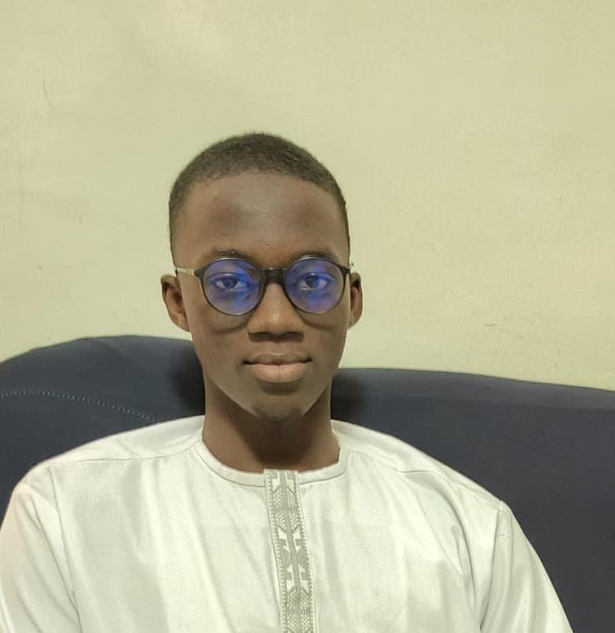

Mame Seydi WADE
Étudiant · Licence 2 Informatique
CONTACT
Dakar, Sénégal
[mseydi.wade@univ-thies.sn] · +221 [77 517 17 15]
OBJECTIF
Obtenir un stage en programmation pour renforcer mes compétences pratiques et découvrir le milieu professionnel.
COMPETENCES
HTML & CSS65%
Langues
Wolof — Langue maternelle
Français — Courant
Anglais — Bon niveau
Centres d'intérêt
Programmation · Jeux vidéo · Football
PROFIL
Étudiant motivé, curieux et sérieux, cherchant à acquérir une première expérience professionnelle en développement et programmation. Bon relationnel grâce à une expérience dans la vente.
FORMATION
- Licence 2 Informatique — Université Iba Der Thiam[UIDT]
- Baccalauréat — Série [S2]
EXPERIENCE
Vendeur de pièces détachées — DIFONCE[Dakar] en [2024]
- Accueil et conseil client, gestion de petites transactions.
- Inventaire et suivi des produits, travail en équipe.
Projets académiques
- Projets en base de donnees et en C(algorithmes simples)
- Pages web en HTML/CSS — maquettes et mise en forme.
COMPETENCES COMPLEMENTAIRES
- Base de donnees
Creation et manipulation de bases de donnees
- Programmation
C, HTML, CSS — bases solides et envie d'apprendre davantage.
DISPONIBILITE
Disponible pour un stage dès que possible — durée et dates à préciser selon l'entreprise.